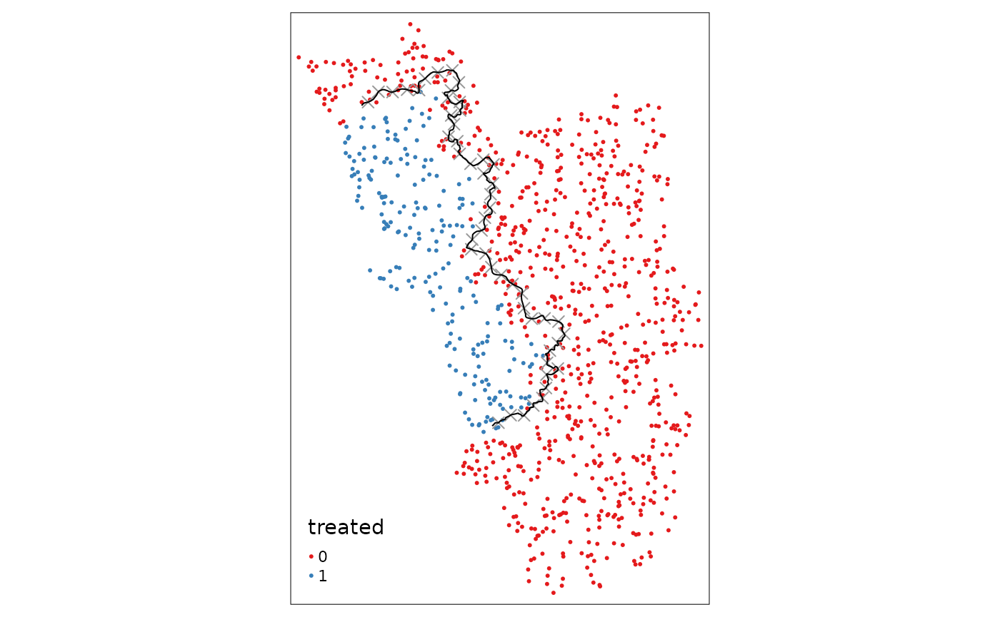

vignettes/spatialrdd_vignette.Rmd
spatialrdd_vignette.RmdIn recent years, spatial versions of Regression Discontinuity Designs (RDDs) have increased tremendously in popularity in the social sciences. In practice, executing spatial RDDs, especially the many required robustness- and sensitivity checks, is quite cumbersome. It requires knowledge of statistical programming and handling and working with geographic objects (points, lines, polygons). Practitioners typically carry out these GIS tasks in a “point and click” fashion in GUIs like ArcGIS, QGIS, or GeoDA and then manually export these data into the statistical environment of their choice. Statistical analysis is then carry out in an a-spatial way. This is sub-optimal for several reasons:
SpatialRDD is the first (geo-)statistical package that
unifies the geographic tasks needed for spatial RDDs with all potential
parametric and non-parametric estimation techniques that have been put
forward (see e.g. Lehner2023a?
for an overview). It makes it easy to understand critical
assumptions regarding bandwidths, sparse border points, and border
segment fixed effects. Furthermore, the flexibility of the
shift_border function makes it attractive for all sorts of
identification strategies outside of the RD literature that rely on
shifting placebo borders.
Geographic objects are treated as simple features
throughout, making heavy use of the sf package by Edzer
Pebesma which revolutionized spatial data analysis in R
and has already superseded the older and less versatile sp
package.SpatialRDD facilitates analysis inter alia because it
contains all necessary functions to automatize otherwise very tedious
tasks that are typically carried out “by hand” in the GUIs of GIS
software. SpatialRDD unifies everything in one language and
e.g. has the necessary functions to check and visualize the implications
of different bandwidths, shift placebo boundaries, do all necessary
distance calculations, assign treated/non-treated indicators, and
flexibly assign border segment fixed effects while keeping the units of
observations at their proper position in space and allowing the
researcher to visualize every intermediate step with map plots. For the
latter we will mostly rely on the flexible and computationally very
efficient tmap package, while also ggplot2 is
used at times.
For the purpose of illustration, this vignette uses simulated data on
real boundaries/polygons and guides the user through every necessary
step in order to carry out a spatial RDD estimation. At the appropriate
points, we will also make remarks on technical caveats and issues that
have been pointed out in the literature and give suggestions to improve
these designs.
The workhorse functions of SpatialRDD in a nutshell
are:
assign_treated()border_segment()discretise_border()spatialrd()plotspatialrd()printspatialrd()shift_border()cutoff2polygon()and they are going to be introduced here in precisely this order.
You (obviously) have to pay attention that you have an RD border that
is fine-grained enough so that it resembles the true cutoff. Something
at the degree of e.g. the widely used GADM boundaries (just as an
example, because administrative boundaries themselves are usually never
valid RD cutoffs due to the compound treatment problem) is most probably
not detailed enough. Furthermore it is suggested to always work in a
localized projection system that has meters as units - as opposed to
e.g. degrees (you can check that with st_crs(data)$units).
A good choice would be UTM: find the right grid here, then get the
corresponding EPSG number and use it in
st_transform() after you imported your data (see e.g. Bivand and Pebesma 2023 for guidance on
projection systems).
Throughout the vignette we will use the geographic boundaries on Goa, India, from Lehner (2023). The data, included in the package, contains
cut_off which describes the spatial
discontinuityFor your own RD design you need 1. in the form of either a line (as a single feature, i.e. all potential segments merged together) or a finely spaced set of points on your border. Furthermore you need the polygon that specifies the treatment area, and, of course, the data set that contains all your observations, including the x- and y-coordinate for each unit of observation. This way it is easy to convert the data to an sf data.frame.
library(SpatialRDD)
library(dplyr) # more intuitive data wrangling
library(stargazer) # easy way to make model output look more appealing (R-inline, html, or latex)
library(sf)The data shown here come in EPSG:32643, which is a “localized” UTM
coordinate reference system (CRS). These are generally preferable for
exercises like a Spatial RDD, as they are more precise and also allow us
to work in meters (the “classic” longitude/latitude CRS, EPSG 4326,
works in degrees). If your study area is small, you should reproject
your data into the CRS of the according UTM zone (simply use
st_transform()). To verify the units of our CRS we could
simply run st_crs(cut_off)$units.
All the spatial objects are of class sf from the sf package. This means
they are just a data.frame with a special column that
contains a geometry for each row. The big advantage is, no matter if you
prefer base R, dplyr, or any other way to handle and
wrangle your data, the sf object can be treated just like a
standard data.frame. The one single step that transforms
these spatial objects back to a standard data.frame is just
dropping the geometry column with
st_geometry(any.sf.object) <- NULLor alternatively
st_set_geometry(any.sf.object, NULL)If you import geospatial data in a different format, say the common
shapefile (*.shp) - which is NOT preferrable see here why, or as a
geopackage (*.gpkg), it is fairly straightforward to
convert it:
mydata.sf <- st_read("path/to/file.shp")In case your data is saved as a *.csv (if in Stata file
format, check the foreign and readstata13
package) you just have to tell sf in which columns the x-
and x-coordinates are saved, and it will convert it into a spatial
object:
mydata.sf <- st_as_sf(loaded_file, coords = c("longitude", "latitude"), crs = projcrs)
# just the EPSG as an integer or a proj4string of the desired CRSFor more thorough information, I suggest consulting the documentation
and vignettes of the sf package or Bivand and Pebesma (2023).
data(cut_off, polygon_full, polygon_treated)
library(tmap)
#> Breaking News: tmap 3.x is retiring. Please test v4, e.g. with
#> remotes::install_github('r-tmap/tmap')
tm_shape(polygon_full) + tm_polygons() +
tm_shape(polygon_treated) + tm_polygons(col = "grey") +
tm_shape(cut_off) + tm_lines(col = "red")Above we see the simple map, visualizing the “treated polygon” in a
darker grey, and the tmap syntax that produced it.
Let’s simulate some random points within the polygon that describes the entire study area:
set.seed(1088) # set a seed to make the results replicable
points_samp.sf <- sf::st_sample(polygon_full, 1000)
points_samp.sf <- sf::st_sf(points_samp.sf) # make it an sf object bc st_sample only created the geometry list-column (sfc)
points_samp.sf$id <- 1:nrow(points_samp.sf) # add a unique ID to each observation
# visualise results together with the line that represents our RDD cutoff
tm_shape(points_samp.sf) + tm_dots() + tm_shape(cut_off) + tm_lines(col = "red")Now we use the first function of the SpatialRDD package.
assign_treated() in essence just does a spatial
intersection and returns a column vector that contains 0 or
1, depending on whether the observation is inside or
outside the treatment area. Thus, we just add it as a new column to the
points object. The function requires the name of the points object, the
name of the polygon that defines the treated area, and the id that
uniquely identifies each observation in the points object:
points_samp.sf$treated <- assign_treated(points_samp.sf, polygon_treated, id = "id")
tm_shape(points_samp.sf) + tm_dots("treated", palette = "Set1") + tm_shape(cut_off) + tm_lines(col = "red")As a next step we add an outcome of interest that we are going to use
as dependent variable in our Spatial Regression Discontinuity Design.
Let’s call this variable education and assume it measures
the literacy rate that ranges from 0 to 1 (0%, meaning everyone is
illiterate, to 100%, meaning everyone in the population can read and
write). We assume that the units, call them villages, in the “treated”
polygon have on average a higher literacy rate because they received
some sort of “treatment”. Let’s just assume aliens dropped (better)
schools in all of these villages, but not in any of the outside
villages, and everything else is constant and identical across the two
territories. Crucially, people also do not sort themselves across the
border, i.e. they do not go on the other side to attend school and then
return to their villages.
# first we define a variable for the number of "treated" and control which makes the code more readable in the future
NTr <- length(points_samp.sf$id[points_samp.sf$treated == 1])
NCo <- length(points_samp.sf$id[points_samp.sf$treated == 0])
# the treated areas get a 10 percentage point higher literacy rate
points_samp.sf$education[points_samp.sf$treated == 1] <- 0.7
points_samp.sf$education[points_samp.sf$treated == 0] <- 0.6
# and we add some noise, otherwise we would obtain regression coeffictions with no standard errors
# we draw from a normal with mean 0 and a standard devation of 0.1
points_samp.sf$education[points_samp.sf$treated == 1] <- rnorm(NTr, mean = 0, sd = .1) +
points_samp.sf$education[points_samp.sf$treated == 1]
points_samp.sf$education[points_samp.sf$treated == 0] <- rnorm(NCo, mean = 0, sd = .1) +
points_samp.sf$education[points_samp.sf$treated == 0]
# let's also add a placebo outcome that has no jump
points_samp.sf$placebo <- rnorm(nrow(points_samp.sf), mean = 1, sd = .25)
# visualisation split up by groups
library(ggplot2)
ggplot(points_samp.sf, aes(x = education)) + geom_histogram(binwidth = .01) + facet_grid(treated ~ .)From the above histograms we can see that we were successful in creating different group means. This is also confirmed by the simple univariate regression of \(y_i = \alpha + \beta\ \unicode{x1D7D9}(treated)_i + \varepsilon_i\):
list(lm(education ~ treated, data = points_samp.sf),
lm(placebo ~ treated, data = points_samp.sf)) %>% stargazer::stargazer(type = "text")
#>
#> ===========================================================
#> Dependent variable:
#> ----------------------------
#> education placebo
#> (1) (2)
#> -----------------------------------------------------------
#> treated1 0.100*** 0.035*
#> (0.008) (0.020)
#>
#> Constant 0.600*** 0.990***
#> (0.004) (0.009)
#>
#> -----------------------------------------------------------
#> Observations 1,000 1,000
#> R2 0.160 0.003
#> Adjusted R2 0.160 0.002
#> Residual Std. Error (df = 998) 0.100 0.260
#> F Statistic (df = 1; 998) 186.000*** 3.100*
#> ===========================================================
#> Note: *p<0.1; **p<0.05; ***p<0.01where the intercept tells us that the average in the non-treated areas is 0.6 and treated villages have on average a 10 percentage points higher education level.
The next essential step before we start t do proper Spatial RDD
analysis is to determine how far each of these points is away from the
cutoff. Here we just make use of a function from sf called
st_distance() that returns a vector with units (that we
have to convert to real numbers by as.numeric()):
points_samp.sf$dist2cutoff <- as.numeric(sf::st_distance(points_samp.sf, cut_off))This allows us now to investigate villages only within a specific range, say 3 kilometers, around our “discontinuity”:
tm_shape(points_samp.sf[points_samp.sf$dist2cutoff < 3000, ]) + tm_dots("education", palette = "RdYlGn", size = .1) +
tm_shape(cut_off) + tm_lines()And to run the univariate regression from above also just within a bandwidth (this specification is already starting to resemble the canonical parametric spatial RD specification). As we know the exact data generating process (no “spatial gradient” but a rather uniform assignment), it is obvious to us that this of course leaves the point estimate essentially unchanged:
lm(education ~ treated, data = points_samp.sf[points_samp.sf$dist2cutoff < 3000, ]) %>% stargazer::stargazer(type = "text")
#>
#> ===============================================
#> Dependent variable:
#> ---------------------------
#> education
#> -----------------------------------------------
#> treated1 0.090***
#> (0.015)
#>
#> Constant 0.610***
#> (0.011)
#>
#> -----------------------------------------------
#> Observations 159
#> R2 0.190
#> Adjusted R2 0.180
#> Residual Std. Error 0.095 (df = 157)
#> F Statistic 36.000*** (df = 1; 157)
#> ===============================================
#> Note: *p<0.1; **p<0.05; ***p<0.01Now we go step by step through all potential (parametric and non-parametric) ways in which one could obtain point estimates for Spatial RDDs (see e.g. Lehner2023a? for details).
For the “naive” estimation (Keele and Titiunik
2015), meaning that the spatial dimension is essentially
disregarded, we first define a variable distrunning that
makes the distances in the treated areas negative so that our
2-dimensional cutoff is then at 0.
points_samp.sf$distrunning <- points_samp.sf$dist2cutoff
# give the non-treated one's a negative score
points_samp.sf$distrunning[points_samp.sf$treated == 0] <- -1 * points_samp.sf$distrunning[points_samp.sf$treated == 0]
ggplot(data = points_samp.sf, aes(x = distrunning, y = education)) + geom_point() + geom_vline(xintercept = 0, col = "red")The point estimate of the “classic” non-parametric local linear
regression, carried out with the rdrobust package (Calonico, Cattaneo, and Titiunik 2015), then
looks like this:
library(rdrobust)
summary(rdrobust(points_samp.sf$education, points_samp.sf$distrunning, c = 0))
#> Sharp RD estimates using local polynomial regression.
#>
#> Number of Obs. 1000
#> BW type mserd
#> Kernel Triangular
#> VCE method NN
#>
#> Number of Obs. 785 215
#> Eff. Number of Obs. 127 100
#> Order est. (p) 1 1
#> Order bias (q) 2 2
#> BW est. (h) 4248.546 4248.546
#> BW bias (b) 6601.220 6601.220
#> rho (h/b) 0.644 0.644
#> Unique Obs. 785 215
#>
#> =============================================================================
#> Method Coef. Std. Err. z P>|z| [ 95% C.I. ]
#> =============================================================================
#> Conventional 0.116 0.025 4.580 0.000 [0.066 , 0.166]
#> Robust - - 4.089 0.000 [0.064 , 0.181]
#> =============================================================================and the according visualization with data driven bin-width selection:
rdplot(points_samp.sf$education, points_samp.sf$distrunning, c = 0, ci = 95,
kernel = "triangular", y.label = "education", x.label = "distance to border")For RDD estimation in R, in general, there are
currently three packages flying around: RDD,
rddtools, and rddapp (building on the
RDD); whereby the latter seems to be the most up-to-date
and comprehensive one (as it draws on previous work that others
did).rddapp estimates various specifications (does not do robust
inference, though)
And it gives several possibilities of visualizing classic, one-dimensional RDDs. Here we arbitrarily pick one parametric and one non-parametric estimate, including confidence intervals, and manually chosen binsizes:
This method, popularized by Dell (2010)
in her influential on the Peruvian Mining Mita, examines only
observations within a certain distance around the border by using a
parametric approach. From the point of view of which additional “spatial
technicalities” are needed, it essentially only boils down to the
introduction of border segments. These are then used to apply a “within
estimator” to allow for different intercepts for each of those segment
categories in order to, inter alia, alleviate the omitted variable
problem. As is well known, instead of a within transformation, one might
as well throw a set of dummies for each of the segments in the
regression. The regression coefficient of interest of this saturated
model then gives a weighted average over all segments. On top of that we
might also be interested in the coefficient of each segment to infer
something about potential heterogeneity alongside our regression
discontinuity.
The (computationally a bit demanding) function
border_segment() only needs the points layer and the cutoff
as input (preferably as a line, but also an input in the form of points
at the boundary works). The function’s last parameter lets us determine
how many segments we want. As with the assign_treated()
function, the output is a vector of factors.
points_samp.sf$segment10 <- border_segment(points_samp.sf, cut_off, 10)
points_samp.sf$segment15 <- border_segment(points_samp.sf, cut_off, 15)
tm_shape(points_samp.sf) + tm_dots("segment10", size = 0.1) + tm_shape(cut_off) + tm_lines()
tm_shape(points_samp.sf) + tm_dots("segment15", size = 0.1) + tm_shape(cut_off) + tm_lines()It is worth noting that the researcher has to pay attention to how
the fixed effects are assigned. It could, e.g. due to odd bendings of
the cutoff, be the case that for some segments only one side actually
gets assigned a point. These situations are undesirable for two main
reasons. First, estimation with segments that contain either only
treated or only untreated units will be dropped automatically. Second,
fixed effects category with a small amount of observations are not very
informative for estimation. It is thus paramount to always plot the
fixed effect categories on a map. The border_segment()
already gives the researcher a feeling for how meaningful the choice for
the number of segments was. In the above example we have a segment for
every 13 kilometers, which seems not too unreasonable. We could already
see however, that some of the categories contain very little
observations. In the following example, we thus choose fewer border
points, leading to more observations on each side of the border for
every segment and thus to more meaningful point estimates:
points_samp.sf$segment5 <- border_segment(points_samp.sf, cut_off, 5)
tm_shape(points_samp.sf) + tm_dots("segment5", size = 0.1) + tm_shape(cut_off) + tm_lines()Simple OLS estimates, using the segments that we just obtained as categories for our fixed effects, show these differences:
library(lfe)
#> Loading required package: Matrix
list(lfe::felm(education ~ treated | factor(segment15) | 0 | 0, data = points_samp.sf[points_samp.sf$dist2cutoff < 3000, ]),
lfe::felm(education ~ treated | factor(segment5) | 0 | 0, data = points_samp.sf[points_samp.sf$dist2cutoff < 3000, ])
) %>% stargazer::stargazer(type = "text")
#>
#> =====================================================
#> Dependent variable:
#> ---------------------------------
#> education
#> (1) (2)
#> -----------------------------------------------------
#> treated1 0.094*** 0.089***
#> (0.016) (0.015)
#>
#> -----------------------------------------------------
#> Observations 159 159
#> R2 0.280 0.250
#> Adjusted R2 0.200 0.220
#> Residual Std. Error 0.094 (df = 143) 0.092 (df = 153)
#> =====================================================
#> Note: *p<0.1; **p<0.05; ***p<0.01The confidence intervals of both point estimates are overlapping,
yet, one can see that the fixed effects choice can have a substantial
impact. We obtain a point estimate that is (unsurprisingly, as we have a
data generating process that is very uniform across space) very similar
to the one we obtained from the simple OLS regression from the
beginning. As compared to the “classic RD” point estimate that we
obtained from the non-parametric local linear regression from the
rdrobust package, the point estimate from our fixed effects
regression is a bit more conservative. But from eyeballing we can
determine that the average effect lies somewhere around 0.1, meaning
that the literacy rate is 10 percentage points higher in the treated
areas. Exactly the way we designed our simulated data.
Finally we move towards a fully fledged Geographic Regression
Discontinuity (GRD) design (according to the
nomenclature by Keele and Titiunik 2015). The function
spatialrd() incorporates the RD estimation with two running
variables but also allows to carry out the estimation on any boundary
point (“GRDDseries”) with just one line of code. This allows us to
visualize the treatment effect at multiple points of the cutoff and thus
infer something about the potential heterogeneity of the effect. Or,
most importantly, to assess the robustness of the GRD itself.
First of all we have to cut the border into equally spaced segments.
We will obtain a point estimate for each of these segments, or boundary
points. The discretise_border() function just requires the
sf object that represent the cutoff (polyline preferred but also points
possible) and the number of desired boundary points:
borderpoints.sf <- discretise_border(cutoff = cut_off, n = 50)
borderpoints.sf$id <- 1:nrow(borderpoints.sf)
# exclude some of the borderpoints with little n so that the vignette can compile without warning:
#borderpoints.sf <- borderpoints.sf %>% slice(c(5,10,20,30,40))
tm_shape(points_samp.sf[points_samp.sf$dist2cutoff < 3000, ]) + tm_dots("education", palette = "RdYlGn", size = .1) +
tm_shape(cut_off) + tm_lines() +
tm_shape(borderpoints.sf) + tm_symbols(shape = 4, size = .3)For plotting just a results table, it would be preferrable to choose
just a data.frame as output
(spatial.object = FALSE).
results <- spatialrd(y = "education", data = points_samp.sf, cutoff.points = borderpoints.sf, treated = "treated", minobs = 10, spatial.object = F)
knitr::kable(results)| Point | Estimate | SE_Conv | SE_Rob | p_Conv | p_Rob | Ntr | Nco | bw_l | bw_r | CI_Conv_l | CI_Conv_u | CI_Rob_l | CI_Rob_u |
|---|---|---|---|---|---|---|---|---|---|---|---|---|---|
| 1 | 0.12 | 0.05 | 0.06 | 0.02 | 0.05 | 53 | 55 | 14.2 | 14.2 | 0.02 | 0.21 | 0.00 | 0.24 |
| 2 | 0.14 | 0.07 | 0.08 | 0.04 | 0.07 | 71 | 57 | 15.2 | 15.2 | 0.00 | 0.27 | -0.01 | 0.30 |
| 3 | 0.11 | 0.05 | 0.06 | 0.02 | 0.06 | 103 | 84 | 19.9 | 19.9 | 0.02 | 0.21 | 0.00 | 0.24 |
| 4 | 0.08 | 0.05 | 0.06 | 0.11 | 0.22 | 100 | 65 | 16.0 | 16.0 | -0.02 | 0.17 | -0.05 | 0.20 |
| 5 | 0.08 | 0.05 | 0.06 | 0.11 | 0.22 | 104 | 73 | 17.3 | 17.3 | -0.02 | 0.17 | -0.04 | 0.19 |
| 6 | 0.07 | 0.04 | 0.05 | 0.09 | 0.22 | 112 | 84 | 20.9 | 20.9 | -0.01 | 0.15 | -0.04 | 0.16 |
| 7 | 0.06 | 0.03 | 0.04 | 0.08 | 0.20 | 108 | 62 | 18.9 | 18.9 | -0.01 | 0.13 | -0.03 | 0.13 |
| 8 | 0.07 | 0.04 | 0.05 | 0.10 | 0.18 | 93 | 46 | 17.1 | 17.1 | -0.01 | 0.15 | -0.03 | 0.16 |
| 9 | 0.11 | 0.07 | 0.08 | 0.09 | 0.11 | 77 | 33 | 14.1 | 14.1 | -0.02 | 0.24 | -0.03 | 0.27 |
| 10 | 0.13 | 0.07 | 0.08 | 0.04 | 0.05 | 69 | 32 | 12.3 | 12.3 | 0.01 | 0.26 | 0.00 | 0.30 |
| 11 | 0.18 | 0.07 | 0.08 | 0.01 | 0.02 | 56 | 32 | 11.1 | 11.1 | 0.04 | 0.32 | 0.03 | 0.35 |
| 12 | 0.25 | 0.12 | 0.13 | 0.03 | 0.03 | 40 | 22 | 9.6 | 9.6 | 0.02 | 0.48 | 0.02 | 0.53 |
| 13 | 0.32 | 0.14 | 0.15 | 0.02 | 0.02 | 29 | 17 | 8.2 | 8.2 | 0.04 | 0.60 | 0.05 | 0.65 |
| 14 | 0.20 | 0.07 | 0.08 | 0.01 | 0.01 | 33 | 32 | 9.5 | 9.5 | 0.06 | 0.35 | 0.06 | 0.40 |
| 15 | 0.15 | 0.06 | 0.07 | 0.01 | 0.01 | 24 | 30 | 8.8 | 8.8 | 0.03 | 0.27 | 0.04 | 0.32 |
| 16 | 0.16 | 0.05 | 0.06 | 0.00 | 0.00 | 52 | 86 | 13.7 | 13.7 | 0.06 | 0.25 | 0.06 | 0.28 |
| 17 | 0.18 | 0.06 | 0.07 | 0.00 | 0.00 | 30 | 45 | 10.7 | 10.7 | 0.07 | 0.29 | 0.07 | 0.33 |
| 18 | 0.15 | 0.06 | 0.07 | 0.01 | 0.02 | 56 | 98 | 14.5 | 14.5 | 0.04 | 0.26 | 0.02 | 0.29 |
| 19 | 0.11 | 0.05 | 0.06 | 0.02 | 0.09 | 96 | 102 | 16.4 | 16.4 | 0.01 | 0.20 | -0.01 | 0.21 |
| 20 | 0.10 | 0.06 | 0.07 | 0.08 | 0.16 | 85 | 56 | 13.9 | 13.9 | -0.01 | 0.21 | -0.04 | 0.23 |
| 21 | 0.08 | 0.05 | 0.06 | 0.11 | 0.22 | 80 | 39 | 13.2 | 13.2 | -0.02 | 0.19 | -0.05 | 0.20 |
| 22 | 0.07 | 0.06 | 0.07 | 0.21 | 0.35 | 73 | 53 | 13.3 | 13.3 | -0.04 | 0.19 | -0.07 | 0.20 |
| 23 | 0.10 | 0.05 | 0.06 | 0.04 | 0.12 | 96 | 52 | 14.1 | 14.1 | 0.00 | 0.20 | -0.02 | 0.21 |
| 24 | 0.10 | 0.05 | 0.07 | 0.05 | 0.14 | 103 | 60 | 14.5 | 14.5 | 0.00 | 0.21 | -0.03 | 0.23 |
| 25 | 0.10 | 0.06 | 0.07 | 0.10 | 0.23 | 83 | 57 | 13.6 | 13.6 | -0.02 | 0.22 | -0.06 | 0.24 |
| 26 | 0.06 | 0.07 | 0.09 | 0.43 | 0.64 | 55 | 49 | 11.7 | 11.7 | -0.09 | 0.20 | -0.13 | 0.22 |
| 27 | 0.05 | 0.08 | 0.10 | 0.56 | 0.80 | 37 | 38 | 9.6 | 9.6 | -0.11 | 0.21 | -0.17 | 0.22 |
| 30 | 0.01 | 0.09 | 0.11 | 0.88 | 0.95 | 32 | 34 | 9.2 | 9.2 | -0.17 | 0.19 | -0.22 | 0.21 |
| 31 | 0.08 | 0.06 | 0.07 | 0.20 | 0.35 | 65 | 61 | 12.8 | 12.8 | -0.04 | 0.19 | -0.08 | 0.21 |
| 32 | 0.11 | 0.06 | 0.07 | 0.07 | 0.14 | 47 | 39 | 10.6 | 10.6 | -0.01 | 0.22 | -0.03 | 0.24 |
| 33 | 0.10 | 0.04 | 0.05 | 0.01 | 0.04 | 102 | 68 | 14.9 | 14.9 | 0.02 | 0.17 | 0.00 | 0.20 |
| 34 | 0.10 | 0.04 | 0.05 | 0.01 | 0.02 | 109 | 63 | 14.8 | 14.8 | 0.03 | 0.18 | 0.02 | 0.20 |
| 35 | 0.11 | 0.04 | 0.05 | 0.01 | 0.02 | 53 | 47 | 11.3 | 11.3 | 0.02 | 0.19 | 0.02 | 0.22 |
| 36 | 0.17 | 0.03 | 0.03 | 0.00 | 0.00 | 24 | 25 | 8.6 | 8.6 | 0.11 | 0.23 | 0.12 | 0.25 |
| 37 | 0.15 | 0.05 | 0.06 | 0.00 | 0.01 | 38 | 21 | 8.6 | 8.6 | 0.05 | 0.26 | 0.05 | 0.29 |
| 38 | 0.15 | 0.06 | 0.07 | 0.01 | 0.02 | 108 | 44 | 13.4 | 13.4 | 0.04 | 0.25 | 0.02 | 0.29 |
| 39 | 0.13 | 0.05 | 0.06 | 0.01 | 0.02 | 167 | 64 | 16.5 | 16.5 | 0.03 | 0.22 | 0.03 | 0.26 |
| 40 | 0.14 | 0.05 | 0.06 | 0.01 | 0.01 | 137 | 62 | 15.1 | 15.1 | 0.04 | 0.24 | 0.04 | 0.28 |
| 41 | 0.18 | 0.06 | 0.07 | 0.00 | 0.00 | 61 | 45 | 11.1 | 11.1 | 0.06 | 0.30 | 0.07 | 0.34 |
| 42 | 0.15 | 0.06 | 0.07 | 0.01 | 0.01 | 57 | 50 | 10.9 | 10.9 | 0.03 | 0.26 | 0.04 | 0.30 |
| 43 | 0.13 | 0.05 | 0.06 | 0.01 | 0.01 | 152 | 64 | 15.5 | 15.5 | 0.04 | 0.22 | 0.04 | 0.25 |
| 44 | 0.11 | 0.06 | 0.07 | 0.04 | 0.05 | 99 | 60 | 13.3 | 13.3 | 0.01 | 0.22 | 0.00 | 0.26 |
| 45 | 0.10 | 0.05 | 0.06 | 0.04 | 0.05 | 111 | 59 | 13.8 | 13.8 | 0.01 | 0.20 | 0.00 | 0.23 |
| 46 | 0.11 | 0.06 | 0.08 | 0.09 | 0.10 | 112 | 52 | 13.4 | 13.4 | -0.02 | 0.23 | -0.02 | 0.28 |
| 47 | 0.08 | 0.05 | 0.06 | 0.12 | 0.13 | 130 | 60 | 15.5 | 15.5 | -0.02 | 0.18 | -0.03 | 0.21 |
| 48 | 0.06 | 0.04 | 0.05 | 0.12 | 0.18 | 233 | 75 | 23.0 | 23.0 | -0.02 | 0.15 | -0.03 | 0.18 |
| 49 | 0.06 | 0.04 | 0.06 | 0.17 | 0.23 | 162 | 67 | 19.6 | 19.6 | -0.03 | 0.15 | -0.04 | 0.17 |
| 50 | 0.05 | 0.04 | 0.05 | 0.24 | 0.35 | 112 | 60 | 17.6 | 17.6 | -0.03 | 0.12 | -0.05 | 0.14 |
The average treatment effect is given by taking the mean of all point
estimates. Running mean(results$Estimate) this gives 0.12,
which is exactly how we designed our DGP. For the plotting of the
GRDDseries and a visualisation in space of each point estimate
we need to have a spatial object. All this is incorporated in the
plotspatialrd() function.
results <- spatialrd(y = "education", data = points_samp.sf, cutoff.points = borderpoints.sf, treated = "treated", minobs = 10)
plotspatialrd(results, map = T)Or just the GRDDseries without the map.
plotspatialrd(results, map = F)
In Spatial Regression Discontinuity exercises, the researcher usually
also has to show that the results are robust towards different
specifications and parameters. Also in this respect the
SpatialRDD package offers a lot of capabilities that are
time saving and make replicability easy. This toolbox for shifting and
moving around borders and afterwards assigning (placebo) treatment
status again is in fact so potent, that it is of use in many other
research design settings outside of geographic RDs. In this vignette we
will just see the basic intuition. For more details on all the options
check out the separate vignette shifting_borders or go to
the copy
of the article on the package website.
Here we are going to apply a standard tool that we got to know in linear algebra 1 classes: an affine transformation of the type \(f(x) = x\mathbf{A}+b\), where the matrix \(\mathbf{A}\) is the projection matrix to shift, (re-)scale, or rotate the border. For simplicity we now only apply a shift by 3000 meters in both the x- and y-coordinates of the border.
placebocut_off.1 <- shift_border(cut_off, operation = "shift", shift = c(3000, 3000))
placeboborderpoints.1 <- discretise_border(cutoff = placebocut_off.1, n = 50)
tm_shape(points_samp.sf) + tm_dots("treated", palette = "Set1") + tm_shape(placeboborderpoints.1) + tm_symbols(shape = 4, size = .3) + tm_shape(placebocut_off.1) + tm_lines()After the border shift we now have to re-assign the new treatment
status in order to carry out regressions. For that matter, we create new
polygons from scratch with the cutoff2polygons() function.
The logic of this function is not very intuitive at first, but the
vignette on border shifting will clarify that. In our case, we do not
have to go around corners with the counterfactual polygon because both
ends of the cutoff go towards the West. Just make sure that the
endpoints are chosen in a way so that all observations that should be in
the “placebo treated” group are also actually inside this resulting
polygon.
placebo.poly.1 <- cutoff2polygon(data = points_samp.sf, cutoff = placebocut_off.1, orientation = c("west", "west"), endpoints = c(.8, .2))
tm_shape(placebo.poly.1) + tm_polygons(alpha = .3)Finally, we have to use the assign_treated() function
from the beginning of the vignette again:
points_samp.sf$treated1 <- assign_treated(data = points_samp.sf, polygon = placebo.poly.1, id = "id")
sum(points_samp.sf$treated == 0 & points_samp.sf$treated1 == 1) # number of villages that switched treatment status
#> [1] 60
tm_shape(points_samp.sf) + tm_dots("treated1", palette = "Set1") + tm_shape(placeboborderpoints.1) + tm_symbols(shape = 4, size = .3) + tm_shape(placebocut_off.1) + tm_lines()After plotting the points again, we can visually infer that the
villages to the right got assigned the “treated” dummy. Further we can
compute the number of villages that change their status. This helps us
to decide whether the bordershift was big enough (if e.g. only a handful
of observations switched, then we would expect this to have little to no
impact on our point estimates and thus would dub such a robustness
exercise as not very meaningful).
In this case 60 villages changed. Given the initial number of treated
observations, this seems a change of a big enough magnitude and thus a
meaningful robustness exercise.
Finally, we do the exact same exercise from above again and run the nonparametric specification on many boundary points to approximate a continuous treatment effect. The series fluctuates around 0 and has not a single significant estimate, and it is thus safe to conclude that the methodology works.
results1 <- spatialrd(y = "education", data = points_samp.sf, cutoff.points = placeboborderpoints.1, treated = "treated1", minobs = 10)
plotspatialrd(results1, map = T)Before we close, let’s also run our placebo exercise with the parametric specification. Unfortunately, OLS with fixed effects is not as sensitive when it comes to detecting the border shift. The coefficient is still borderline significant. In this case, we should have moved the border 1 or 2 kilometers farther to make it insignificant.
points_samp.sf$segment.1.5 <- border_segment(points_samp.sf, placebocut_off.1, 5) # assigning new segments based on now cutoff
points_samp.sf$dist2cutoff1 <- as.numeric(sf::st_distance(points_samp.sf, placebocut_off.1)) # recompute distance to new placebo cutoff
list(
lm(education ~ treated1, data = points_samp.sf[points_samp.sf$dist2cutoff1 < 3000, ]),
lfe::felm(education ~ treated1 | factor(segment.1.5) | 0 | 0, data = points_samp.sf[points_samp.sf$dist2cutoff1 < 3000, ])
) %>% stargazer::stargazer(type = "text")
#>
#> ========================================================
#> Dependent variable:
#> ------------------------------------
#> education
#> OLS felm
#> (1) (2)
#> --------------------------------------------------------
#> treated11 0.021 0.018
#> (0.015) (0.015)
#>
#> Constant 0.620***
#> (0.010)
#>
#> --------------------------------------------------------
#> Observations 177 177
#> R2 0.011 0.032
#> Adjusted R2 0.005 0.004
#> Residual Std. Error 0.100 (df = 175) 0.100 (df = 171)
#> F Statistic 1.900 (df = 1; 175)
#> ========================================================
#> Note: *p<0.1; **p<0.05; ***p<0.01